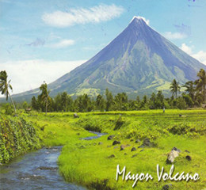

The capital and chief city of the Philippines. The city is the centre of the country's economic, political, social, and cultural activity. It is located on the island of Luzon and spreads along the eastern shore of Manila Bay at the mouth of the Pasig River.
Tourist Destination

Mayon Volcano
Also known as Mount Mayon, Mayon Volcano, the main landmark of the Philippines Albay Province, rises 2,462 meters (8,077 feet) from the shores of the Gulf of Albay about 10 kilometers (6.2 miles) away. Mount Mayon is truly a mesmerizing countryside view, especially when peaceful, and symmetrically, this volcano has the most perfectly-shaped cone in the world.
El Nido, Palawan
North of the mainland Palawan is a paradise considered by many as one of their dream destinations. With 45 islands and islets that harbor some of the country's best white sand beaches, hidden lagoons, picturesque cliffs and rich marine life underneath its Earth, El Nido is indeed a piece of paradise.
Explore Luzon
Banaue Rice Terraces
Dubbed as the 8th Wonder of the World by Filipinos, Banaue Rice Terraces, are located approximately 1,500 meters (5000 ft) above sea level; and if its steps were put end to end, it would encircle half the globe, according to Wikipedia. This awesome site is 2000 years old, and is believed to have been carved mostly by the hands of the ancestors of the Ifugao people, with minimal equipment.
Vigan Heritage
Vigan City is one of the top tourist destinations in the Philippines found in the Ilocos Region. Its establishment can be traced back to the 16th century and considered as the most intact planned Spanish colonial town in Asia.
Zambales
Zambales is the surfing equivalent of that. Most surfers check in at Crystal Beach for the convenience.Surf and lounge.Tali is the closest divers can get to paradise,
Tagaytay
Tagaytay Philippines (Filipino: Lungsod ng Tagaytay) is a third class city in the province of Cavite, Philippines. Only 55 kilometers (34.18 miles) away from Manila by road, it is one of the country's most popular tourist destinations. Tagaytay City provides a good view of the Taal Volcano. The city is a popular summer tourist destination because of its cool climate due to its high altitude. Divine Word Seminary, one of biggest schools of theology in Southeast Asia, is also one of the oldest religious institutions in the city (located North-east).